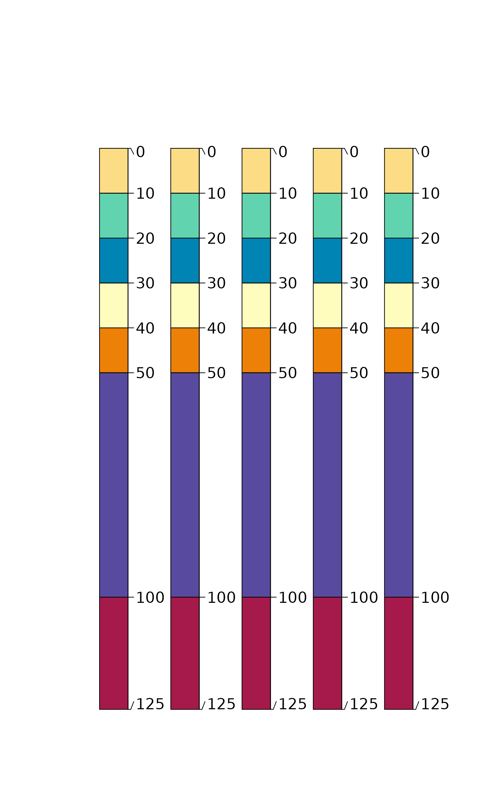
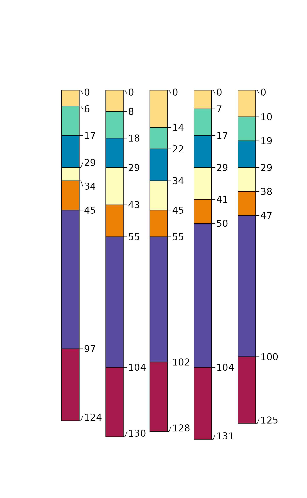

Uniqueness within a SoilProfileCollection via MD5 Hash
Source: R/SoilProfileCollection-methods.R
unique.RdUnique profiles within a SoilProfileCollection using and MD5 hash of select horizon and / or site level attributes.
Examples
# an example soil profile
x <- data.frame(
id = 'A',
name = c('A', 'E', 'Bhs', 'Bt1', 'Bt2', 'BC', 'C'),
top = c(0, 10, 20, 30, 40, 50, 100),
bottom = c(10, 20, 30, 40, 50, 100, 125),
z = c(8, 5, 3, 7, 10, 2, 12)
)
# init SPC
depths(x) <- id ~ top + bottom
# horizon depth variability for simulation
horizons(x)$.sd <- 2
# duplicate several times
x.dupes <- duplicate(x, times = 5)
# simulate some new profiles based on example
x.sim <- perturb(x, n = 5, thickness.attr = '.sd')
# graphical check
plotSPC(x.dupes, name.style = 'center-center')

plotSPC(x.sim, name.style = 'center-center')

# inspect unique results
plotSPC(unique(x.dupes, vars = c('top', 'bottom')), name.style = 'center-center')
# uniqueness is a function of variable selection
plotSPC(unique(x.sim, vars = c('top', 'bottom')), name.style = 'center-center')
 plotSPC(unique(x.sim, vars = c('name')), name.style = 'center-center')
plotSPC(unique(x.sim, vars = c('name')), name.style = 'center-center')